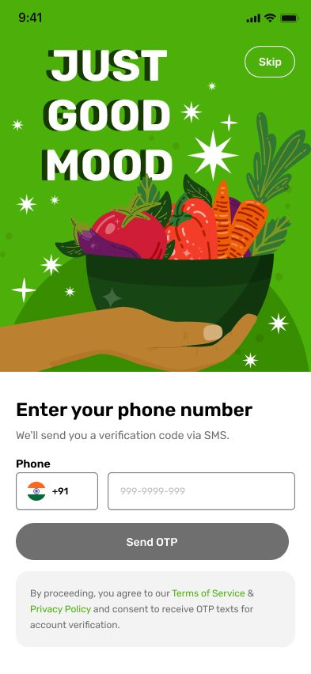
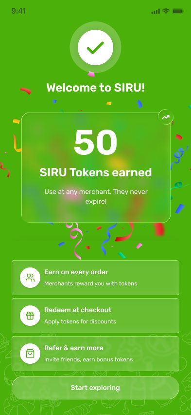
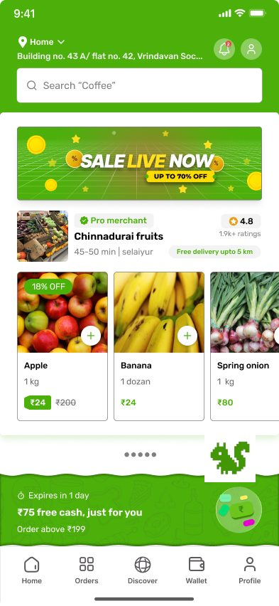

SIRU — grocery delivery app
A hyperlocal grocery delivery app for mobile.
- Status
- In development, not yet released
- Platform
- Mobile app
- Team
- Two Figma designers
- My role
- Research, competitor analysis, UI design
How I worked
- Researched how people shop for groceries and where existing apps make it harder.
- Compared competing delivery apps to find gaps and patterns worth following.
- Designed the UI from the UX flow, sharing the workload with a second designer.
What I designed
- Sign-in and onboarding for new customers
- A welcome screen that explains the rewards (earn, redeem, refer)
- A home screen with search, offers and product cards
- Delivery setup, made shorter and easier to complete


